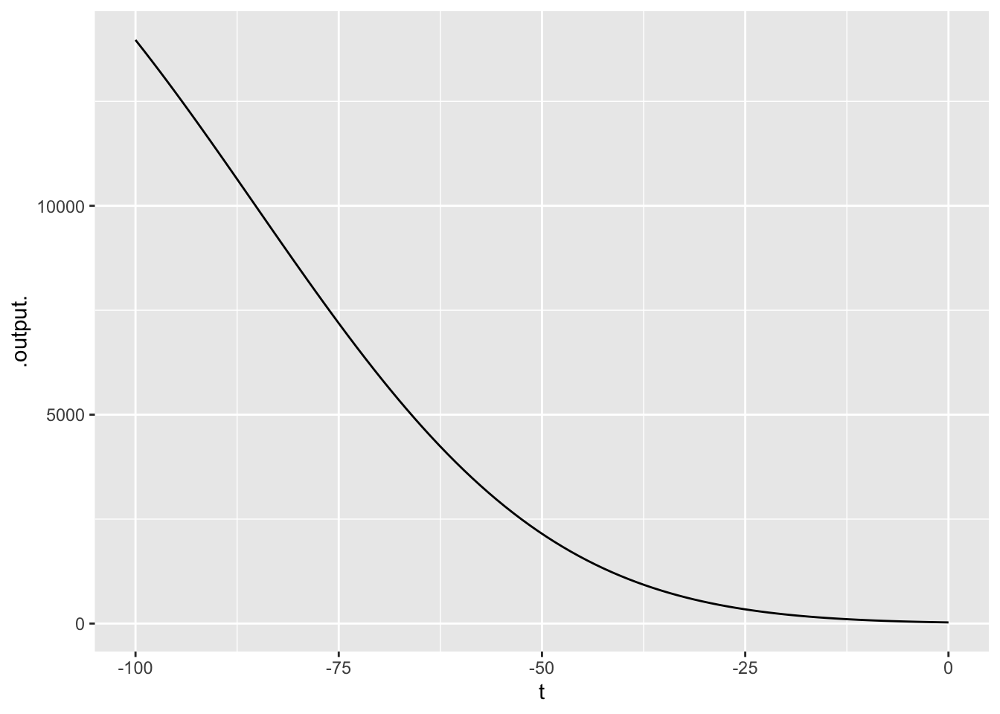
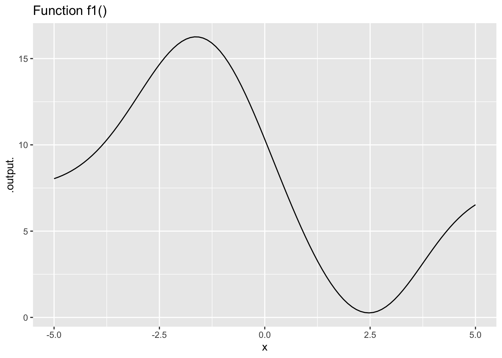

20 Evanescent h
Our goal in this chapter is to motivate the differentiation rules presented in Chapter 17 for the pattern-book functions. Recall that the slope-function operator can be written as a ratio of rise-over-run: \[{\cal D}_t f(t) \equiv \frac{f(t+h) - f(t)}{h}\] where \(h\) is the length of the “run.” The idea of the instantaneous slope function is to make \(h\) as small as possible.
In the very early days of calculus, the vanishing \(h\) was described as “evanescent.” (Dictionary definition: “tending to vanish like vapor.”23) Another good image of \(h\) becoming as small as possible comes from the same University of Oxford mathematician whose poem The Jabberwocky we considered earlier. In Alice in Wonderland, Dodgson introduced the character of the Cheshire Cat.  2370
2370

Figure 20.1: Vanishing \(h\) in the form of the Chesire Cat from Alice in Wonderland.
“All right,” said the Cat; and this time it vanished quite slowly, beginning with the end of the tail, and ending with the grin, which remained some time after the rest of it had gone.
“Well! I’ve often seen a cat without a grin,” thought Alice; “but a grin without a cat! It’s the most curious thing I ever saw in my life!”
Start our story with two of the basic modeling functions that, like the characters from Alice in Wonderland, have considerable “personality”: the sinusoid (sin()) and the sigmoid (pnorm()).


Figure 20.2: The pattern-book sinusoid and sigmoidal functions. A vertical blue line has been added to mark the input \(t=0\)
The computer can easily construct the slope functions for the sinusoid and sigmoid, which we’ll call Dsin() and Dsigma() respectively.
Dsin <- makeFun(( sin(t+h) - sin(t))/h ~ t, h=0.1)
Dsigma <- makeFun((pnorm(t+h) - pnorm(t))/h ~ t, h=0.1)In the tilde expression handed to makeFun(), we’ve identified t as the name of the input and given a “small” default value to the h parameter. But R recognizes that both Dsin() and Dsigma() are functions of two variables, t and h, as you can see in the parenthesized argument list for the functions.
Dsin## function (t, h = 0.1)
## (sin(t + h) - sin(t))/h
Dsigma## function (t, h = 0.1)
## (pnorm(t + h) - pnorm(t))/hThis is a nuisance, since when using the slope functions we will need always to think about h, a number that we’d like to describe simply as “small,” but for which we always need to provide a numerical value. A surprisingly important question in the development of calculus is, “What can we do to avoid the nuisance?” To find out, let’s look at Dsin() and Dsigma() for a range of values of h, as in Figure 20.3. 2372


Figure 20.3: The slope functions of the sinusoid and sigmoid. Each curve shows the slope function for a particular numerical choice of h. Both panels show \(h=2, 1, 0.5, 0.1, 0.01, 0.001, 0.0001, 0.00001, 0.000001\).
Some observations from this numerical experiment:
-
As \(h\) gets very small, the slope function doesn’t depend on the exact value of \(h\).
This will provide a way for us, eventually, to discard \(h\) so that the slope function will not need an \(h\) argument.
For small \(h\), we have \({\cal D}_t \sin(t) = \sin(t + \pi/2) = \cos(t)\). That is, taking the slope function of a sinusoid gives another sinusoid, shifted left by \(\pi/2\) from the original. Or, in plain words, for small \(h\)H the cosine is the slope function of the sine.
For small \(h\), we have \({\cal D}_t \pnorm(t) = \dnorm(t)\). That is, for small \(h\) the hump function is the slope function of the sigmoid function.
You can confirm these last two statements by comparison with the original functions, especially the alignment of the peaks of the slope functions with respect to the peak of the sinusoid and the half-way point of the sigmoid. 2374
Here you use \(t\) as the name of the input and \(\partial_t\) as the notation for differentiation. Previously in this block you used \(x\) as the input name and \(\partial_x\) for differentiation. Are they the same? 2376
Mathematically, the name of the input makes no difference whatsoever. We could call it \(x\) or \(t\) or \(y\) or Josephina. What’s important is that the name be used consistently on the left and right sides of \(\equiv\), and that the derivative symbol \(\partial\) has a subscript that identifies the with-respect-to input. All these are the same statement mathematically: 2378
\[\partial_x\, x = 1\ \ \ \ \partial_t\, t = 1\ \ \ \ \partial_y\, y = 1\ \ \ \ \partial_\text{Josephina} \text{Josephina} = 1\] Admittedly, the last one is hard to read.
When we look at derivatives of functions of multiple variables we will need to be thoughtful about our choice of the with-respect-to input. But we want you to get used to seeing different input names used for differentiation. 2380
Now consider the slope functions of the logarithm and exponential functions.


Figure 20.4: The slope functions of the logarithm and exponential.
These numerical experiments with the logarithm and exponential functions are more evidence that, as \(h\) gets small, the slope function doesn’t depend on \(h\). And, we find that:
- For small \(h\), the slope function of the logarithm is a power-law function: \({\cal D}_t \ln(t) = \frac{1}{t}\).
- For small \(h\), the slope function of the exponential is the exponential itself: \({\cal D}_t e^x = e^x\).
You can confirm these by evaluating the slope function of the exponential at \(t=0\) and \(t=1\), and the slope function of the logarithm at \(t= 2, 1, 1/2, 1/4, 1/8.\)
Such numerical experiments on the other pattern-book functions reveal the patterns presented in Chapter 17
20.1 Role of h
In motivating differentiation of the pattern-book functions, we introduced a quantity \(h\) and then ignored it, saying that it doesn’t really matter so long as it is “small.” A reasonable person might wonder what “small” really means, and why we needed to introduce \(h\) in the first place if we were eventually going to ignore it. 2382
One reason is that “small” and “zero,” although related, are different. For example, refering to the slope functions Dsin() and Dsigma() that we created in an early example in this chapter, we see that setting \(h\) to zero does not get us where we need to be: 2384
Dsin(t=1, h=0)
Dsigma(t=0, h=0)In NaN, you can hear the echo of your fourth-grade teacher reminding you that it is illegal to divide by zero.
Think of evanescent \(h\) as the vapor in the definition of “evanescent”: “tending to vanish like vapor.” This vapor is the solvent in paint. You don’t want the solvent once the paint is on the wall; wet paint is a nuisance. But getting the paint from the can to the wall absolutely needs the solvent. 2386
We used the solvent \(h\) earlier in the chapter in the numerical experiments that led us to the derivatives of the pattern-book functions, for instance \(\partial_x e^x = e^x\) or \(\partial_x \sin(x) = \cos(x)\). Eventually, we’ll construct an \(h\)-free theory of differentiation, reducing the process to a set of algebraic rules in which \(h\) never appears. With this as our goal, let’s continue using \(h\) for a while to find some additional useful facts about derivatives. 2388
20.2 Derivatives of linear combinations
Linear combination is one of the ways in which we make new functions from existing functions. As you recall, linear combination involves scaling a function and adding the scaled functions. We can easily use \(h\) to show what is the result of differentiating a linear combination of functions. We’ll use \(f(x)\) and \(g(x)\) as the names that could stand for any function whatsoever. And we’ll let \(b\) be the name of a scalar. First, let’s figure out what is \(\partial_x\, b f(x)\), Going back to writing \(\partial_x\) in terms of a slope function: \[\partial_x\, b\,f(x) = \frac{b\, f(x + h) - b\,f(x)}{h}\\ \ \\ = b \frac{f(x+h) - f(x)}{h} = b\, \partial_x f(x)\] In other words, if we know the derivative \(\partial_x\, f(x)\), we can easily find the derivative of any scaled version of \(f()\).
Now consider the derivative of the sum of two functions, \(f(x)\) and \(g(x)\): \[\partial_x\, \left[f(x) + g(x)\right] =\\ \ \\ =\frac{\left[f(x + h) + g(x + h)\right] - \left[f(x) + g(x)\right]}{h} = \\ \ \\ = \frac{\left[f(x+h) -f(x)\right] + \left[g(x+h) - g(x)\right]}{h}\\ \ \\ = \frac{\left[f(x+h) -f(x)\right]}{h} + \frac{\left[g(x+h) - g(x)\right]}{h}\\ \ \\ = \partial_x\, f(x) + \partial_x\, g(x)\]
Using these two rules together, we can differentiate any linear combination of functions in terms of the differentiated functions themselves:
\[\partial_x\ \left[\strut a_1 g_1(x) + a_2 g_2(x) + a_3 g_3(x) + \cdots\right] =\ \ \ \ \ \ \ \ \ \ \\ \ \\ \ \ \ \ \ \ \ \ \ a_1 \partial_x\, g_1(x) + a_2 \partial_x\, g_2(x) + a_3 \partial_x\, g_3(x) + \cdots\]
Because of the way that \(\partial_x\) can be “passed through” a linear combination, mathematicians say that differentiation is a linear operator. Consider this new fact about differentiation as a down payment on what will eventually become a complete theory telling us how to differentiate a product of two functions or the composition of two functions. 2390
In 1734, famous philosopher George Berkeley (1685-1753) published a long-titled book: The Analyst: A Discourse Addressed to an Infidel Mathematician: Wherein It Is Examined Whether the Object, Principles, and Inferences of the Modern Analysis Are More Distinctly Conceived, or More Evidently Deduced, Than Religious Mysteries and Points of Faith. In The Analyst, Berkeley took issue with the arguments of that time that it is legitimate to divide by \(h\) when, ultimately, \(h\) will be replaced by zero. Calling \(h\) an “evanescent increment,” he asked, 2392
“And what are these same evanescent Increments? They are neither finite Quantities nor Quantities infinitely small, nor yet nothing. May we not call them the ghosts of departed quantities?”
Interesting, Berkeley believed that the ghost of \(h\) yielded correct results. His objection was that the framers of calculus had made two, canceling errors.
“[B]y virtue of a two fold mistake you arrive, though not at science, yet truth.”
Berkeley was saying that calculus had not yet been put on a solid logical foundation. It was to be more than a century after Berkeley’s death until this work was accomplished. Once accomplished, the results that had been claimed true all along were confirmed. 2394
Exercise XX.XX: qyOuQF
DRAFT
Put this in Chapter 20.
An exercise given a function \(g(x)\) for which 0.1 isn’t good enough. Vary \(h\) by factors of 10 until a change by 10 doesn’t make any discernable difference.Exercise XX.XX: yT2BkB
DRAFT
See tree harvesting inDiffs/tree-harvest.Rmd
Exercise XX.XX: Z7MY4I
DRAFT
Show that the derivative ofdnorm(x) is - x *dnorm(x) by using the differencing operator with small \(h\).
20.3 Derivatives of the basic modeling functions
The basic modeling functions are the same as the pattern-book functions, but with bare \(x\) replaced by \(\line(x)\). By convention, there are different ways of writing \(\line(x)\) for the different naked functions, for instance: 2396
\[\text{Pattern-book} \ \ \ \longrightarrow\ \ \ \text{Basic}\\ \ \\ \sin(x)\ \ \ \longrightarrow\ \ \ \sin\left(\strut2 \pi \left[x-x_0\right]/P\right)\\ \exp(x)\ \ \ \longrightarrow\ \ \ \exp(k x)\\ x^2 \ \ \ \longrightarrow\ \ \ \left[mx + b\right]^2\\ 1/x \ \ \ \longrightarrow\ \ \ 1/\left[mx + b\right]\\ \ln(x) \ \ \ \longrightarrow\ \ \ \ln(a x + b)\\\]
The rule for the derivative of any basic modeling function \(f(\line(x))\) is \[\partial f(\line(x)) = \partial_x \line(x) \times [\partial_x f]\left(\strut\line(x)\right)\]
To illustrate:
- \(\partial_x e^{kx} = k\, e^{kx}\)
- \(\partial_x \sin(2\pi (x-x_0)/P) = \frac{2\pi}{P} \sin(2\pi (x-x_0)/P)\)
- \(\partial_x (mx + b)^2 = m\, 2 (m x + b) = 2 m^2 x + m^2 b\)
- \(\partial_x \frac{1}{mx + b} = - \frac{m}{(mx + b)^2}\)
- \(\partial_x \ln(a x + b) = a/(ax+b)\)
- \(\partial_x \dnorm(x, mn, sd) = - \frac{x}{sd} \dnorm(x, mn, sd)\)
The sigmoidal function can be written in the general \(f(\line(x))\) fashion:
- sigmoid: \(\pnorm\left(\frac{x-mn}{sd}\right)\)
But it’s also common to write it in the manner of statistics software where the parameters are given as separate arguments:
- sigmoid: \(\pnorm(x, mn, sd)\) which is completely equivalent to \(\pnorm\left(\frac{x-mn}{sd}\right)\)
It’s natural, but wrong, to assume that the same holds true for \(\dnorm(x, mn, sd)\), that is, that it could be written with a single input of the form \((x-mn)/sd\). That’s not true. In fact,
\[\dnorm\left(\frac{x-mn}{sd}\right) = sd\, \dnorm(x, mn, sd)\] Failing to remember the \(sd\) is a common pitfall, even among experienced modelers.
Even for seemingly simple tasks like computing \(\partial_x \pnorm\left(\left[x-mn\right] / sd\right)\), responsible practice calls for having a way to verify your result. For instance, you can compute the derivative of \(\pnorm(x, mn, sd)\) using the slope function with a small but finite \(h\) and compare that to your symbolic result.
Exercise XX.XX: bEC6C4
DRAFT
Check the “general rule” numerically. Divide the finite-difference derivative by the “theoretical” derivative and show that they are 1.Exercise 12.3: QIELS
Compare the functions \(f_1 <- \dnorm(x, mn, sd)\) and \(f_2 <- \dnorm\left(\left[x-mn\right]/sd\right)\) by plotting them out in a SANDBOX.
In order to construct the plot, you’ll have to pick specific values for \(mn\) and \(sd\). Make sure that you use the same \(sd\) and \(mn\) when constructing \(f_1()\) and \(f_2()\).
Question A When \(sd = 1\), are the two functions the same?
- Yes ✔︎
- Yes, but only if \(mn=1\) ︎✘
- Yes, but only if \(mn=0\) ︎✘
- No ︎✘
Question B When \(sd eq 1\), for any given \(mn\), the two functions are not the same. What’s the relationship between \(f_1(x)\) and $f_2(x)?
-
\(f_2(x) = sd\, f_1(x)\) ✔︎
-
\(f_1(x) = sd\, f_2(x)\) ︎✘
-
\(f_1(x) = sd^2 f_2(x)\) ︎✘
- \(f_2(x) = sd^2 f_1(x)\) ︎✘
Exercise 12.3: HCILW
Pilots of commercial passenger aircraft take the comfort of their passengers into account when flying. In transitioning from level flight onto the descent path for landing, for example, pilots take care that the vertical component of acceleration isn’t so great that passengers feel the plane “falling out from under them.”
A simple model of the descent path is a sigmoid function. Suppose that the descent starts from an altitude of \(A = 20,000\) feet at a distance of 30,000 feet from the end of the runway. A reasonable model for the path is \[\text{alt}(x) \equiv A\,\pnorm(x,\ \ mn=30000/2,\ \ sd=30000/6)\] The vertical acceleration is the second derivative of alt() with respect to time: \(\partial_{tt} \text{alt}(t)\). But notice that the definition of alt() is in terms of distance from the runway, \(x\), not \(t\). It’s the plane’s velocity that relates \(x\) and \(t\). For instance, \[x = v (t - t_0)\]
Suppose that the aircraft is flying at 200 miles-per-hour (the “speed limit” for aircraft at or below 10,000 feet).
Question A What is the equivalent of 200 miles-per-hour in feet-per-second?
-
\(200 imes 3600/5280\) ft/s ︎✘
-
\(200 imes 5280/3600\) ft/s ✔︎
-
\(5280 imes 3600/200\) ft/s ︎✘
- \(5280/(3600 imes 200)\) ft/s ︎✘
In a sandbox, re-write \(\text{alt}(x)\) as \(f(t) \equiv \text{alt}\left(-v \left[t - t_0\right]\right)\). Set \(v\) to the plane’s velocity in feet per second. For our purposes, it doesn’t matter what \(t_0\) is; you can set it to zero. (\(t_0\) is the plane’s arrival time at the foot of the runway.) Plot out the function choosing a domain for \(t\) that lets you see the whole descent path.
f <- makeFun(pnorm(- 20000* v* t, 30000/2, 30000/6) ~ t, v = __your_velocity_here__)
slice_plot(f(t) ~ t, domain(t=__your_domain_here__))Compute the second derivative \(\partial_{tt} f(t)\) to find the vertical component of acceleration of the aircraft. (Important note: Due to a bug in R, use numD() rather than D() to compute the second derivative.)
Graph the second derivative over the appropriate domain and look for the most extreme values of acceleration.
ddf <- numD(f(t) ~ t + t)
slice_plot(ddf(t) ~ t, domain(t=__your_domain_here__))
A rule of thumb is that a vertical acceleration of \(5\, \text{ft}\, \text{s}^{-2}\) is not discomfiting. Regrettably, the descent path we described doesn’t meet the standard! So we have to re-design the descent path. Since both the altitude and velocity are set, the only parameter you can change is the distance from the foot of the runway where descent commences.
Question B How far from the foot of the runway should descent begin in order to stay within the \(5\, \text{ft}\, \text{s}^{-2}\) acceleration constraint? Pick the shortest distance that satisfies the constraint.
- 40,000 ft ︎✘
- 50,000 ft ︎✘
- 60,000 ft ✔︎
- 70,000 ft ︎✘
- 80,000 ft ︎✘
For reflection: A new hire at the airline’s operations center proposes to model the descent as a straight-line function rather than a sigmoid. He points out that the second derivative of a straight-line function is always 0, so the passengers would feel no acceleration at all! Explain to this newbie what’s wrong with his idea.